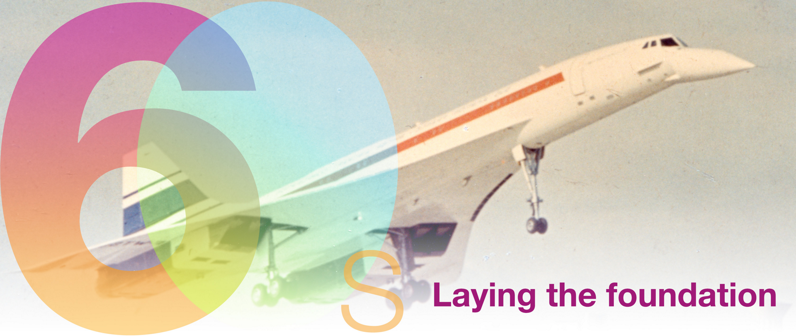
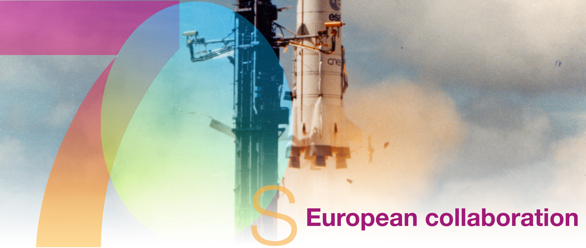
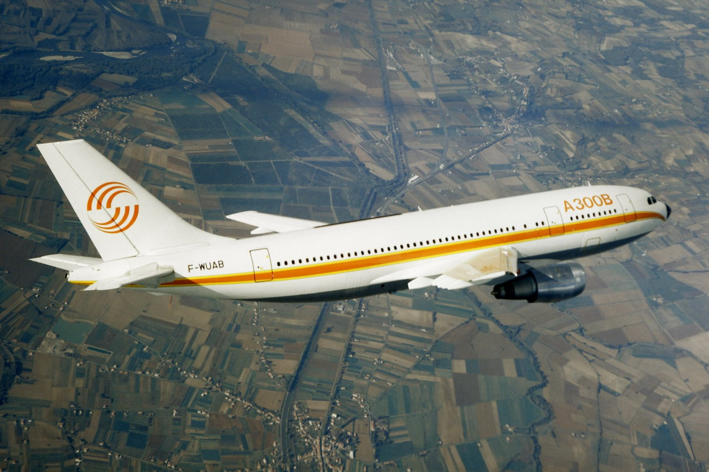
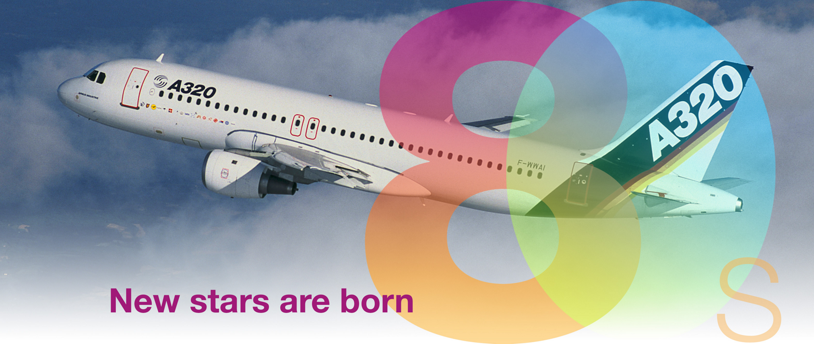
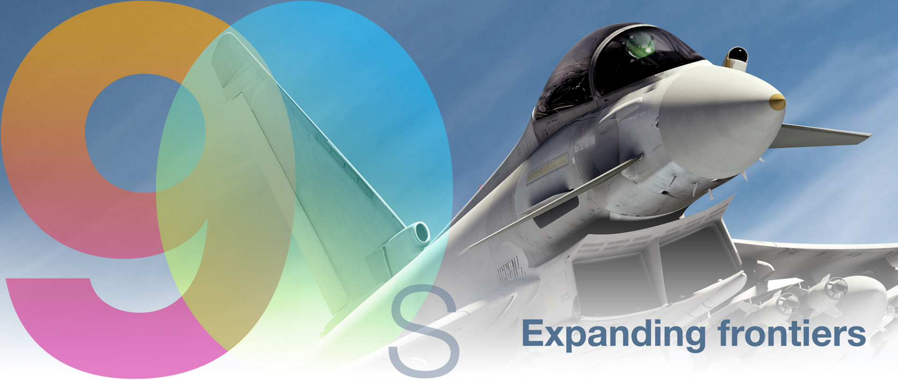
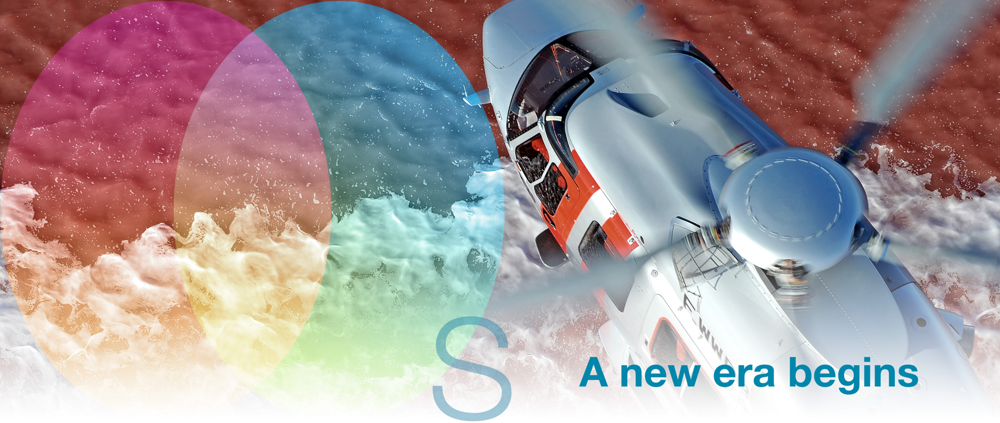
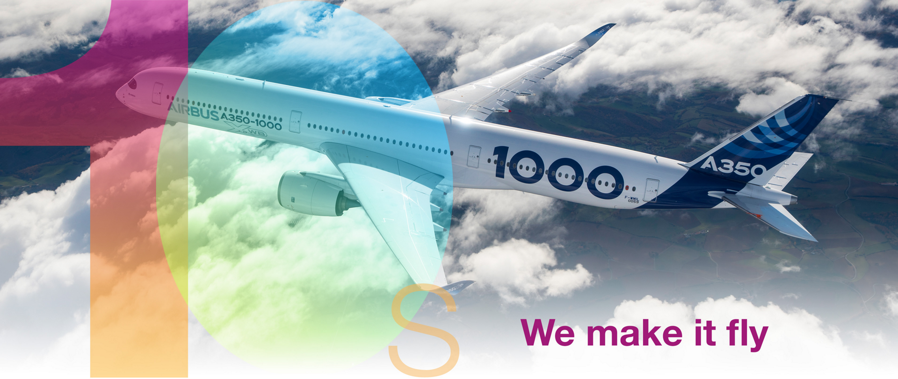

With a 50-year track record of innovation, technological firsts and industry milestones, Airbus has lived up to its official motto, “We Make It Fly,” from the company’s creation.
Today, Airbus is a leader in designing, manufacturing and delivering aerospace products, services and solutions to a customer base that spans the globe – with operations for commercial aircraft, helicopters, defence and space.
Take a journey through some of the highlights of our company from the past 50 years, and learn more about Airbus’ continuing success story with the extensive 'History In Depth' pages below.
1960s
The French-British supersonic aircraft Concorde takes off on its first flight in Toulouse. Commercial aviation took a supersonic leap into the future with Concorde's maiden, who was captain of André Turcat. The French-British supersonic aircraft Concorde takes off on its first flight in Toulouse. Commercial aviation took a supersonic leap into the future with Concorde's maiden, who was captain of André Turcat

May 29, 1969: Official launch of the Airbus A300 program The A300 program was launched with a milestone agreement signed by the French Minister of Transport Jean Chamant and the German Minister of the Economy Karl Schiller at the Paris Airshow 1969 to build a commercial aircraft that was smaller, lighter and more economical than its three-engine American rivals.
1970s
Airbus Industrie was officially created as a GIE France Aerospatiale (a merger of SEREB, Sud Aviation and Nord Aviation) and Germany's Deutsche Airbus - a group of four companies, Messerschmittwerke, Hamburger Flugzeugbau, VFW GmbH and Siebelwerke ATG - each took a 50 percent share.
The first flight with the A300 - the world's first twin-engine wide-angle aircraft. Marking a revolutionary step, the A300's flight test campaign was carried out by an international pilot
The A300B2 enters regular traffic for Air France. The first commercial flights for Air France were from Paris to London.
Tornado's first flight. The MRCA prototype, later known as the Tornado, took its maiden at Manching. The program for this multi-role fighter aircraft was launched as a British-German-Italian joint venture and was was introduced into service beginning on Tornado's first flight in 1979. The MRCA prototype, later known as the Tornado, took his maiden at Manching. The program for this multi-role fighter aircraft began as a British-German-Italian joint venture, and was introduced in early 1979
1980s
Cockpit advances. Delivery of the first A300 FFCC jetliner version, received by the Indonesian airline Garuda, with the forward-facing crew cockpit configuration, which enabled a two-pilot crew to fly the aircraft without the need for a flight engineer. This was the world's first for a wide-angle aircraft The forward-facing cockpit with two crews has since become a standard for the aviation industry.
First flight of the A310. "Airbus Family" started with the A310 with a shorter fuselage and the A300 with a longer range. Lufthansa and Swissair were the first airlines
Launch of A320. With the groundbreaking Fly-by-wire technology, the A320 family would record spectacular sales success and become the best-selling family of jetliner aircraft ever

Jean Pierson, President and CEO of Airbus 1985 - 1998. Jean Pierson was a French engineer and industrialist and participated in the Concorde program and the development of Airbus as one of its historic leaders. Pierson advocated the multicultural spirit of Airbus, which summed up the essence of the organization from its inception to the present day: “The determination of the partners to keep the evil demons within the European the rivalry in chess was a key factor in Airbus Industri's success. It is in Europe's interest for this determination to prevail. If there could be a lesson ... to learn from the Airbus Industrie experience, it would be that cooperation is the key to prosperity and that there is simply no room for narrow nationalist aspirations.”
1990s
Arrival at the A340. The long range with four engines A340-300, with room for 295 in a three-class configuration and fly 7,150 nautical miles / 13,200 kilometers, was rolled out in October 1991.
Virgo on medium to long distance A330. With 335 passengers in two classes, the A330 marked another milestone with the first Rolls-Royce engine - the Trent 700 - on an Airbus aircraft.
Eurofighter's first flight. The extremely capable, flexible and versatile fighter aircraft in the turn role flew for the first time. Every day protects these aircraft the skies of Europe, the Middle East and the southern hemisphere
Expansion of A300-600ST Beluga. Beluga was the successor to the Super Guppy carrier for Airbus components
Super jumbo A3XX. Airbus Industrie sets up Large Aircraft Division, to develop the super jumbo A3XX, later designated the A380.

First flight of C295. Originally designed for deployment of forces, the C295 can carry over nine tons of troops or cargo. It has been further developed from CN235 and has a longer body and more powerful engines.
2000s
First flight test of the A318, the smallest member of the A320 family. Captain Bernd Schaefer confirmed that the aircraft was handled as expected on his maiden, who started flight campaign A318.
Launch of the A400M program. With the first flight carried out in December 2009, the A400M was developed for tactical and strategic missions - together with power projection through jet fuel - Airbus set the bar high in terms of technical and program complexity.
Lansering av A400M-programmet. Med den första flygningen som utfördes i december 2009 utvecklades A400M för taktiska och strategiska uppdrag - tillsammans med kraftprojektion genom flygbensin - Airbus satte ribban högt vad gäller teknisk och programkomplexitet.
The Eurocopter Ecureuil AS350 piloted by Didier Delsalle lands on Mount Everest on May 14, 2005. This huge achievement breaks the world record for landing and take-off at the highest altitude ever, setting an ultimate milestone in the history of aviation..
First flight of the A330 MRTT. Based on the successful A330-200 commercial aircraft, the A330 MRTT is the benchmark for the new generation of multi-roller tankers / transport.

Fabrice Brégier, Airbus COO 2006-2018, CEO of Airbus Commercial Aircraft 2012-2018. In 1998, Brégier became CEO of Matra BAe Dynamics. He was appointed CEO of MBDA, the leading European company the missile system company created in 2001 of Aerospatiale Matra, British Aerospace and Finmeccanica. In 2003, Fabrice Brégier became President and CEO of the Eurocopter Group and was appointed Head of the EADS Eurocopter Division on June 20. Brégier was appointed Airbus Chief Operating Officer (COO) in October 2006. As a member of EADS's management team, he was commissioned by Louis Gallois to improve the Group's overall operational results. From 2012 to 2018, Fabrice Brégier was President of Airbus Commercial Aircraft.
2010s
The A350 XWB takes flight. Airbus' newest and most efficient route - the A350 XWB - completed its very successful maiden from Toulouse-Blagnac airport.

First flight of the A320neo. The highly efficient aircraft with a new engine option together with standard Sharklets will provide a 15% reduction in fuel combustion to the carriers.
Uncover H160. The H160 will be unveiled at Airbus Helicopters' Heli-Expo booth in Orlando, Florida. Its first flight took place in Marignane (France) on 13 June 2015.
Virgo on the A330neo. Powered by the latest generation of Rolls-Royce Trent 7000 engines, the A330neo will expand operators' market opportunities with a range increase of around 400 nautical miles while carrying more payloads.
The newest members of the Airbus flight family right away. A milestone partnership between Airbus and Canada's Bombardier entered into force in July when Airbus acquired a majority stake in the C Series Aircraft Limited Partnership (CSALP). The unit manufactures and sells Bombardier's single-speed C-Series jets: CS100 and CS300, which were renamed the A220-100 and A220-300 as new members of the Airbus aircraft family immediately.

The first Beluga XL. Airbus next generation superplane - performed its maiden on July 19 in Toulouse.
The growth of the A220. At the beginning of 2019, more than 530 orders were placed for A220 aircraft. Airbus will open a new assembly line for the aircraft at its US manufacturing facility in Mobile, Alabama, which will build jetliners for US customers.
Tom Enders, CEO of Airbus 2007-2019. Dr. Thomas (“Tom”) Enders served as Chief Executive Officer (CEO) of Airbus SE, from June 2012 to April 2019, after serving as CEO of Airbus Commercial Aircraft Division since 2007. Prior to that, he served as Co-CEO of EADS between 2005 and 2007. He was Head of the Group's Defense Department from 2000 to 2005. He has been a member in Airbus SE's management team. since the start in 2000. Before joining the aviation industry in 1991, he worked as a member of the "Planning Staff" in the German Ministry of Defense and in various foreign policy think tanks. He studied economics, political science and history at the University of Bonn and at the University of California at Los Angeles.